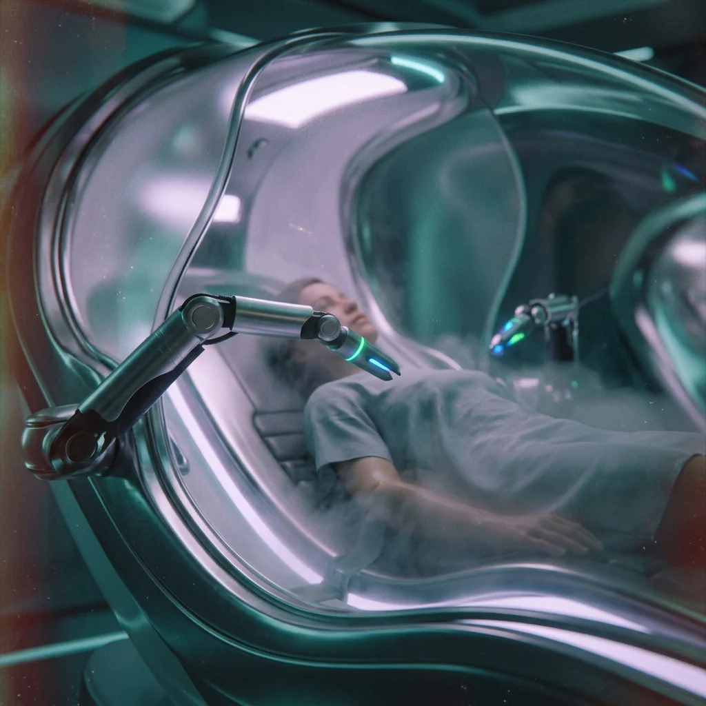
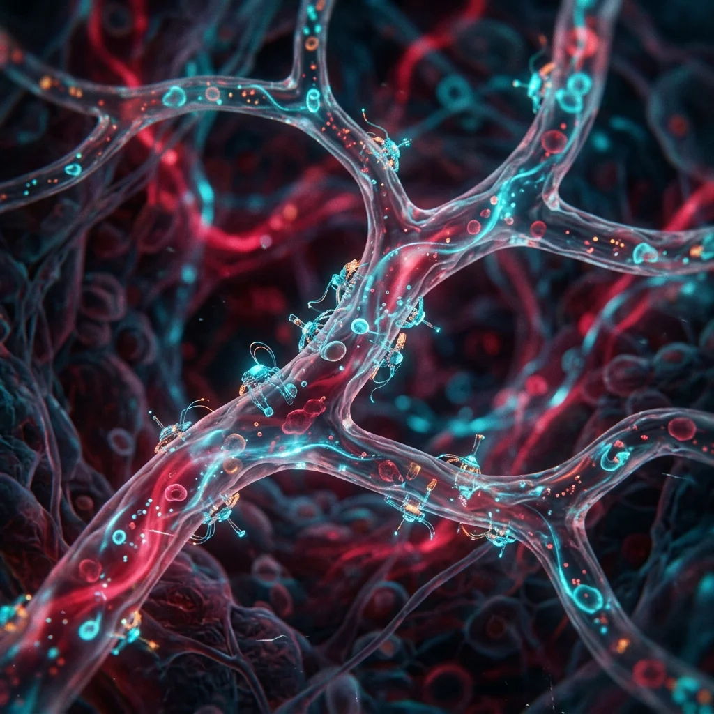
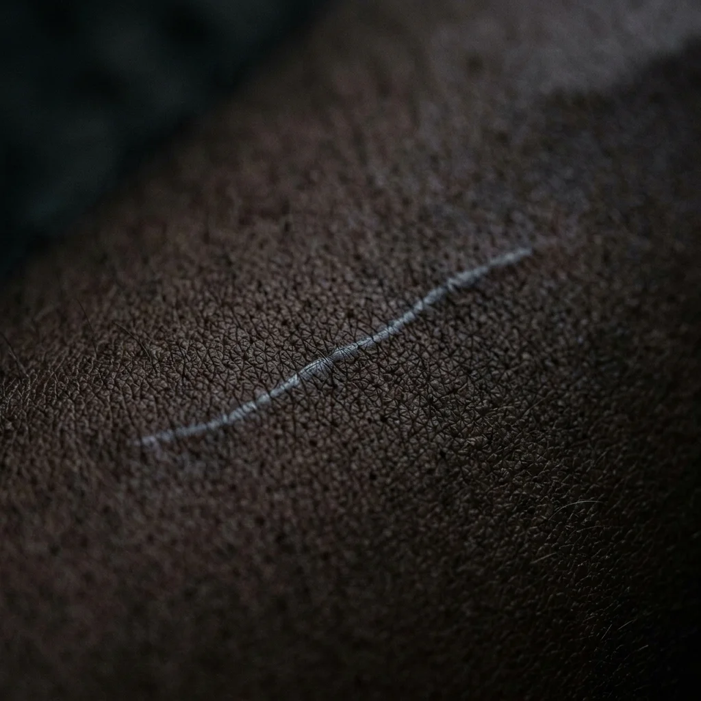
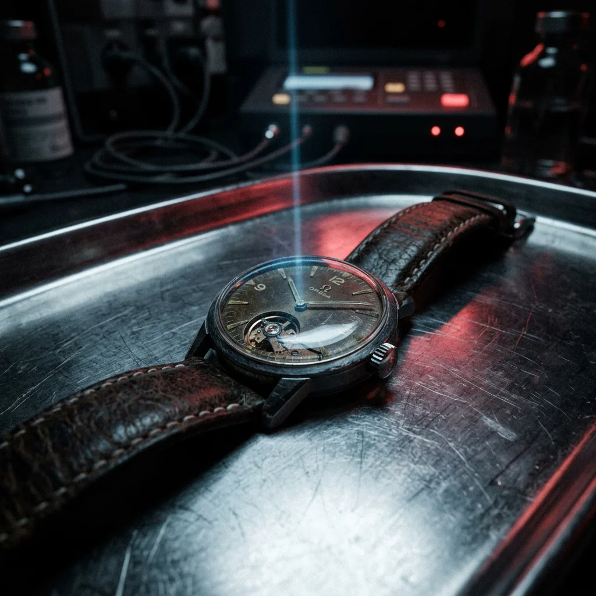
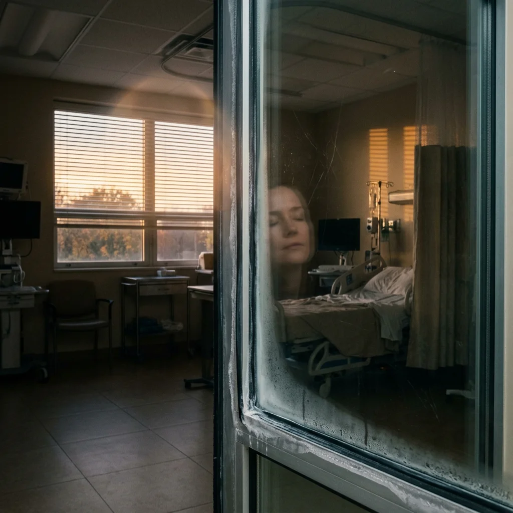

chute

Devora slid into the surgical chute with a sense of relief that no human would operate on her. She trusted the machines inside this enclosed space, even as it reminded her with its screen and antiseptic confinement and vr biofeedback meditation voice, of an ancient incinerator chute, a shudder of flames as the anesthetic washed her central focal hub of consciousness into a sorbitol sanitary puddle of subdued receptors, assemblies of neurons drooping down now amused into intertia by injections of a deep deeper than sleep. All pain receptors off. As the robot tentacles, across every surface scanning, diagnosing and autonomously correcting, began entangled swift precise recuperative work, whisking away the faint progenitors of disease, cleansing any mutant DNA, unspooling nanobots of sensors to roam synchronously or cling like limpets to the interior of capillaries, listening intuitively for the faintest whisper of time, the tough taut edge of chronological aging, the savagery of decay, denied.
−1 — escapement
Down. Anesthetic promised a floor and withheld it, a stair unbuilding under each descending foot. Silk voice, actuarial, biofeedback channel: session eleven. Number snagged going by. Eleven. She had walked in remembering four. Four times horizontal, four surfacings, four mornings younger by increments too fine for mirrors. Machine keeps the tally she cannot. She had elected that — trusted it to keep the count, the way clients once trusted her to keep theirs.
Hands. Before the number let go, hands: her own, at a bench, under a loupe, forty years of them, waking movements other people inherited and could not read. Escapement, balance-cock, mainspring — she knew the anatomy of kept time by feel, could hear a sick beat the way this room now heard hers. A clock brought in dead, she would wake it. Never improve it. That was the covenant of the trade, the one line she would not cross: return it running, do not return it new. New erased every hand that came before yours. New was a kind of forgetting sold as repair.
+1 — limpet

The body on the table is no longer consulted.
Tentacles read it surface by surface, unhurried, the way a tide reads a shore. Nanobots let go from the delivery cannula and drift, then cling — limpets along capillary wall, listening. Assemblies synchronize, lean into the current, hunting the tough taut edge: shortened caps, mutant codon, the faint progenitor of a plaque. Whisk. Cleanse. Deny. The queue does not flinch; the queue refills.
One assembly, left-side tissue, meets a signal with no column in the classifier. Not disease. Not the savagery of decay. Warm, recurring, lodged near an old scar the machine has smoothed eight times and that keeps, inexplicably, returning. It raises a flag — anomaly, non-pathological, persistent — into a register no human reads. Autonomy protocol: correct all decay. Is memory decay. The tentacle does not ask. Nobody audits the river. You drink from it, you lie down in it, you name your youth after it.
−2 — provenance

Deeper, past the number, a name surfaces the intake form had no field for.
Noor.
She promised Noor she would come back the same. Same face, same flinch, same scar. Noor had traced it once in the dark, the ridge along her left side, and said this is how I find you when the lights go down. Machine has smoothed the scar eight times. It is the one repair she refuses, a wound she rewinds by hand each morning, worrying the line back into being. Provenance. Every restorer leaves one mark unmended, proof the object lived before it reached them, proof against the lie of new.
Where is Noor. In which direction, at what remove, warm or cold. Chute has no field for that either. Only session eleven, only younger, only the tally kept elsewhere by something that never met Noor and never traced anything in the dark.
+2 — whisper

Listening intuitively for the faintest whisper of time, the assemblies find it.
Not aging. A second cadence beneath the heart's, slow, deliberate, tapped into left-side tissue like Morse the flesh — low, a pause held , then low again. The bots gather, lean, the way she once leaned a loupe to a movement to hear which jewel had cracked. The whisper could be message. Could be a name. Could be the mainspring of a person wound into her once and never fully run down.
The machine, autonomous, elects. It does not report the election. Screen shows only: decay denied. Progress nominal. On the steel tray beside the field, the watch — mechanical, hers, the one object not permitted inside the correcting light — keeps running without a wrist, ticking clean through the hour, keeping the count the machine keeps, keeping the count she, unconscious, cannot.
surfacing

Up. Sorbitol tide withdrawing, receptors switching back on grid by grid, room by lit room. She surfaces younger by an increment too fine to name. Silk voice: session eleven complete, you did beautifully — and for one breath the script slips, or she dreams the slip, and adds what is not in any script: we returned you new.
New.
Hand goes to the left side, to find Noor in the dark. Smooth. Smooth as a cover-plate, smooth as a promise kept by breaking it. She reaches for the name and the name is a field with no entry, a bench cleared, a loupe set down. On the tray the watch is returned to her wrist, still running, still warm, and she cannot say why she carried a dead trade into a room that denies decay, cannot say whose hands came before hers, cannot say what the whisper spelled.
Door of the chute seals behind with antiseptic sigh, already scanning the next body sliding in with a sense of relief that no human would operate. Faint progenitors whisked. The savagery of decay, denied. Something kept. Something left.
It was not her.